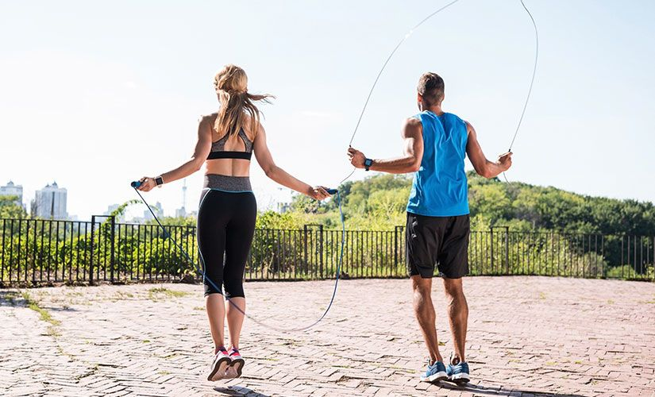
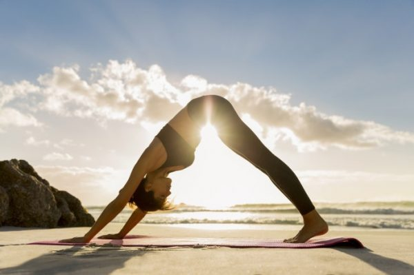

Activities
Sleeping
Why do we need to sleep? Sleep is a period in which our brain and body are restructured. When we sleep, 1/5 of all blood in our body feeds the brain. It saves the learned information in the memory. Our brain and body do the self-cleaning and repair work between 23.00-03.00 at night. In order to get sick less and to have a strong immune system, it is very important to spend the hours between 23.00 and 03.00 at night.
14 benefits of good sleep - Strengthens the immune system, increases resistance to diseases - Increases learning ability - Strengthens memory - Increases concentration power - Protects against heart diseases by reducing bad cholesterol - Provides the removal of harmful toxins from the body - It ensures that our biological clock works properly - Reduces cancer formation - Prevents obesity - Allows our brain to renew itself - Regulates our hormone release - Delays aging - Reduces the risk of stroke and heart attack - Prevents hyperactivity in children
Walking and Running
Taking regular walks every day has many benefits, from heart health to weight control. The most important benefit of this simple and effective exercise is that it delays aging and extends the life span. It extends your life. Studies have proven that people who walk 20-25 kilometers per week live longer than those who do not walk. It protects your heart and lungs. Taking short and fast walks is the best way to protect your heart and lung health It reduces your stress. While walking, your blood pressure is regulated, you release the happiness hormone endorphins and you feel relaxed. It is effective in weight control. Regular and rhythmical walking helps to lose weight and control weight. It is possible to burn excess fat and lose 7 kilos a year by walking for 20 minutes every day. But of course, you should pay attention to what you eat and control calories in this process. Remember that you have to walk the size of the football field just to melt a pack of jelly beans, and think again before dipping your hand into the candy dish. The way you walk is important. When walking, you should pay attention to your body posture. You should walk straight, without curving backwards or forwards; This ensures that every part of your body is equally accompanied by walking. The arms are also important because it is the duty of the arms to increase your strength and balance your foot movements while walking. Shaking the arms also allows you to burn 5-10 calories. Your hands should not be clenched in the form of a fist, so that your blood flow is regular. Swinging feet and arms diagonally at clear angles is a must for a healthy walk.
Skipping Rope
•Skipping rope is an exercise that works the whole body. Your blood flow is accelerated and more blood is pumped to the heart. At the same time, because you breathe faster, more oxygen goes to your lungs, which helps reduce your breathing problems. • It runs all your muscles from ankles to your shoulders. • Improves your feelings of balance, coordination and reflex. • Increases the capacity of your lungs and speeds up your blood flow. • Increases your endurance and fitness. • It reduces your stress level and helps you relax. • It protects your cardiovascular health. • It speeds up your metabolism. • Allows you to stand more upright. • As it is an exercise that requires effort, it allows you to sweat a lot and thus more toxins are removed from your body. It helps you relax and feel more positive after a stressful day. • You need to warm up before starting to jump rope. Start with short, slow, gentle jumps. Once the warm-up is complete, you can make faster jumps for a longer period of time. • If you are not fit, it is normal to feel tired at first. The best thing to do is to gradually increase the time you jump. We are sure that this way you will increase your resistance regularly. • You can also make skipping rope a part of your routine.
Pilates And Yoga
Increases Flexibility and Balance. As evidenced by many scientific studies, practicing certain yoga poses for 15-30 minutes each day makes a big difference in flexibility and balance. Increases Power. Doing yoga and pilates increases not only flexibility but also strength. There are even certain yoga poses and pilates movements designed for this purpose, which increase your muscle mass. It has a positive contribution to heart health. One study found that individuals over 40 who have practiced yoga and pilates for five years have a lower blood pressure and heart rate than those who do not. In other words, it is possible to say that yoga reduces the risk of high blood pressure, which is the main cause of heart diseases. It can reduce chronic pain. The number of scientific studies showing that yoga and pilates reduce chronic pain of many types caused by injuries or arthritis is increasing day by day. For example, in a study conducted in 2005, it was observed that participants with knee arthritis increased their physical functions and decreased their pain by doing yoga and pilates. Another study found that when participants with carpal tunnel syndrome on their wrist did yoga for eight weeks, their pain was reduced and their grip strength increased. Mental Benefits of Yoga and Pilates Reduces Stress and Anxiety The most well-known mental benefits of yoga and pilates are undoubtedly the reduction of stress. YOGA: Yoga has been proven to reduce the release of cortisol, the major stress hormone, thereby reducing anxiety and stress levels. Another reason for this is that yoga allows you to have a more peaceful perspective by showing you the importance of being in the moment.
Meditaion
Meditation reduces stress and controls anxiety, and the reason many people meditate is to lower their stress levels. A study involving 3,500 adults revealed that as a result of an 8-week meditation program, these people experienced an improvement in their depression, anxiety and pain. In the participants who practiced mindfulness meditation for 8 weeks, the inflammation caused by stress also decreased. It improves self-awareness.Some meditations can help you understand yourself much better and unlock your full potential. As a result of a study conducted with 21 women fighting breast cancer and participating in a tai chi program that includes meditation, it was found that these women had a higher increase in self-esteem than other patients who received social support sessions. It can reduce age-related memory loss. Clear thought and focusing keeps our minds young. As a result of 12 different studies, it was revealed that meditation improved attention, memory and mental speed, especially in older participants. It allows to produce kindness. Studies show that not only do people who reveal positive emotions become more gentle people, they also improve on issues such as social anxiety, marital conflict, and anger management. It supports a quality sleep. Many of us may encounter sleep problems at some point in our lives. In a study to reveal the link between meditation and sleep, one group did meditation and the other group didn't. The meditating group fell asleep much faster and spent more time without sleep than those who did not. Meditation especially helps you to sleep much deeper and more soundly as it relaxes your body and helps reduce blood pressure. It helps control pain. Our perception of pain is also linked to our mind and we can feel it exacerbate especially in stressful situations. In a study of participants who meditated, they found increased activity in the brain centers that control pain and reported a decrease in their sensitivity to pain. In fact, although both meditators and non-meditators suffered the same pain, meditators coped with the pain much better. Meditation also contributes to improving physical health. As time passes, high blood pressure causes the heart to work much harder to pump blood, weakening heart function. High blood pressure can also be the basis for conditions such as heart attack or stroke. Many different studies have shown that meditation can help lower blood pressure. Not only does blood pressure drop while meditating, it also improves as time goes on in people who practice regularly. This is very important for cardiovascular health.